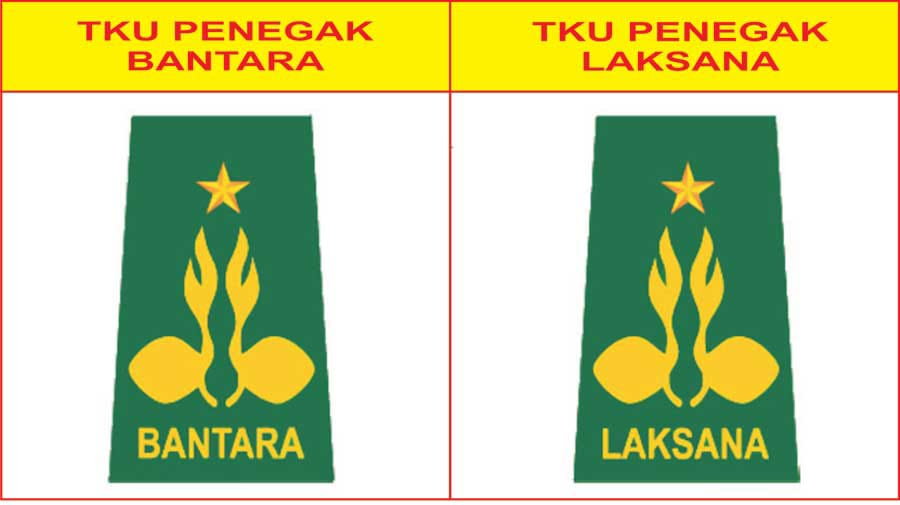

Profile Diri
Tiara Aulia
Tiara Aulia
Tempat Tanggal Lahir
Karawang, 27 Maret 2008
Pendidikan Formal
- MI Al Isti'Anah Kedung Jeruk
- MTs Al-Faridiyah Cibuaya
- SMAN 1 Rengasdengklok
Pendidikan Non Formal
- Mengikuti kegiatan Pramuka
Organisasi
- Pramuka
- Pramuka Penegak Laksana
- Pengurus Inti OSIS
Pencapaian SKU/TKU

Pencapaian Penegak Bantara
Berikut ini adalah Proses pencapaian SKU tingkat Bantara


Kenaikan tingkat penegak laksana
Berikut ini adalah Proses pencapaian SKU tingkat Laksana
Bidang Patriotisme dan Seni Budaya


Pencapaian ini di uji secara langsung oleh guru mata pelajaran yang bersangkutan
Bidang Ketangkasan dan Kesehatan

Kegiatan Gerak Jalan dilakukan pada saat Lintas Medan dan Berenang dilakukan pada saat Praktik Mata Pelajaran PJOK
Bidang Keterampilan dan Teknik Pembangunan

Kegiatan pencapaian TKK JURU KAYU bertempat di Sampalan-Kutawaluya, Kegiatan pencapaian TKK JURU SEMBOYAN bertempat di SMAN 1 Rengasdengklok, dan TKK PENGUMPUL MATA UANG bertempat di Buah Gebang-Jayakerta
Bidang Sosial, Perikemanusiaan, Gotong-Royong, Ketertiban Masyarakat, Perdamaian Dunia dan Lingkngan Hidup
Kegiatan Pospam bertempat di Jalan Lingkar Tanjungpura, Kegiatan PPGD bertempat di Aula SMAN 1 Rengasdengklok,dan Menjaga Tamu bertempat di Kecamatan Kutawaluya
Kegiatan SAKA BAKTI HUSADA
Kegiatan ini di lakukan pada hari Sabtu tanggal 15 Juni 2024 yang bertempat di Puskesmas Kutawaluya dan di dampingi Pembina
Ada beberapa kegiatan yaitu: Materi dari pihak SAKA, Membantu Melayani Pasien, dan Pelayanan Administrasi


Kegiatan Operasi Bersih di Monumen Rawa Gede
Kegiatan ini dilakukan pada tanggal 13 Agustus 2023

Kegiatan Gema Ramadhan
Gema Ramadhan Zona IV bertempat di SMA Negeri 1 Rawamerta pada hari Minggu tanggal 24 Maret 2024

Gema Ramadhan dan Santunan Anak Yatim bersama DKR Rengasdengklok dan SAKA Wira Kartika pada hari Sabtu tanggal 30 Maret 2024 bertempat di Kodim 0404 Rengasdengklok

Legalitas
Telah Menyelesaikan Tingkatan akhir Pramuka Penegak
s

Telah Menyelesaikan tingkatan TKK pada 5 bidang kecakapan, mulai dari tingkat Purwa, Madya dan ada beberapa di tingkat Utama
Pembuatan Projek Produktif Menanam Tanaman Media Tanah
video project tanaman
Penguasaan Bahasa Asing
Dokumenhtasi video Penguasaan Bahasa Asing
video bahasa asing